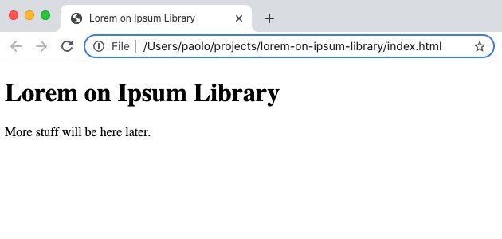
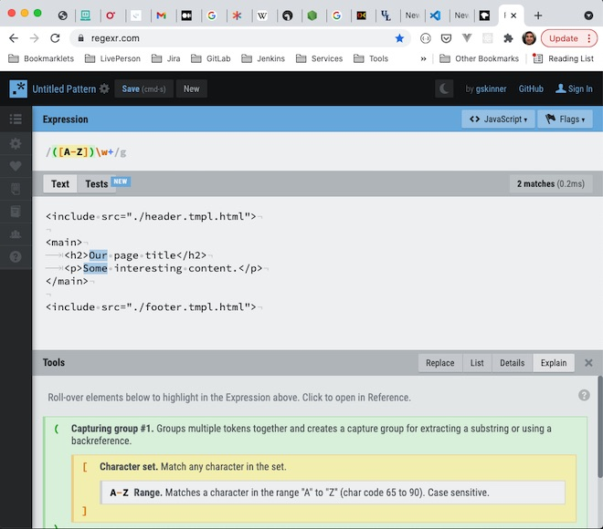
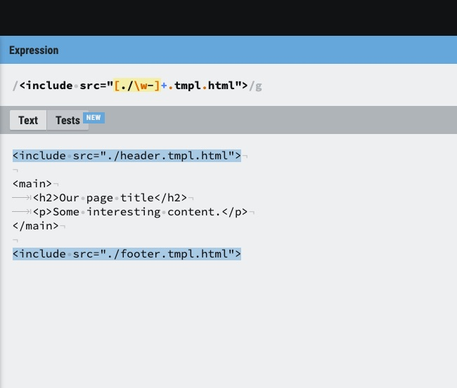

I was a bit stuck for things to write about, and I always resisted this idea because I thought it was too obvious, but sometimes obvious can be good. My plan is to write a series of posts that will go through the process of making a website. We will create a design brief for a hypothetical client and then plan out how we can go about completing the project.
The brief
Our client is a local library for a fictional town called Lorem on Ipsum. They haven't had a website before but they would like to provide a system for the town folk to check what books are available, if they are currently loaned out and to reserve them. They would also like to list events that are taking place at the library and provide blog posts with book recommendations and other interesting content. The website should also provide information about the library, how to contact them and a Frequently Answered Questions (FAQs) section to make it easier for users to find the information they are looking for. The content should be managed by a Content Management System (CMS) and this will be used by the library team that consists of three members of staff including Mrs Beale, library manager, Mr Grey, senior librarian and Miss Tobin the part-time library assistant.
Getting set up
When I first set foot in the wonderful world of web development, one of the things that surprised me is actually how little you need to start making websites. Over time as you acquire new skills and learn about different technologies you can add to your stack of tools, but to begin with all you need to get going is a web browser and a code editor. I personally use Chrome as my web browser and VS Code as my code editor. Of course, you can choose whatever you like from the many options available.
A simple web page
Websites are a collection of files that are provided by servers connected to the world wide web and accessed via your web browser. The main content of a website is contained in HTML files, which stands for HyperText Markup Language and is the standard language for displaying documents in web browsers. In future posts I plan to write about other languages that are used to build websites such as Cascading Style Sheets (CSS) and JavaScript (JS), but to begin with, all we need to start seeing content in a web browser is good old trusty HTML.
HTML documents are made up of tags, which are used to semantically structure content. This means that the tag used to display the content is suited for the type of content that is being shown. For example, if you wanted to display a paragraph of text, you would use a <p> tag. Below is an example of how you would define a paragraph of text in HTML:
<p>This is a paragraph of text in HTML.</p>
Notice in the example above how the text is wrapped by both an opening <p> tag and a closing </p> tag. This is typical in HTML, especially for tags that can contain other nested tags, however there are also self-closing tags that don't require a closing tag. An example of a self closing tag is the <img> tag which is used to display an image (see, semantic). To use an image tag you need to provide a src, where the image you want to display is located on you computer, and some alt text which is a description of what can be seen in the image. The alt text is important because it is used by screen reading software which gives blind or visually impaired users the opportunity to use a website by reading out the content of the page and in this case a description of what is in the image. Below is an example of how you would include an image on your page:
<img src="images/penguins-dancing.jpg" alt="A photo of penguins dancing">
In HTML, a tag can have many attributes. In the example above, src and alt are referred to as HTML attributes. They provide information to the browser about the HTML tag. Tags are often nested inside each other, for instance if you want to display a paragraph of text that contains a link you would write something like the following:
<p>A paragraph containing a <a href="https://google.com">link to Google</a>
Here we have introduced the <a> tag, also known as the anchor tag. The text inside the opening and closing tags is what will be displayed in the browser and the value of the href attribute is the URL of the page the user will be taken to upon clicking the link.
To bring these example to life, let's make a start on our project for the Lorem on Ipsum library. Create a folder called lorem-on-ipsum-library somewhere on you computer. It's conventional to keep folder names in lower case and to replace any spaces with hyphens when working on a web project. Inside this newly created folder create an HTML file called index.html. This file will include the main content and structure of our webpage. Below is what the bare bones of our web page should look like to start with:
<!DOCTYPE html>
<html lang="en">
<head>
<meta charset="UTF-8">
<meta name="viewport" content="width=device-width, initial-scale=1.0">
<title>Lorem on Ipsum Library</title>
</head>
<body>
<h1>Lorem on Ipsum Library</h1>
<p>More stuff will be here later.</p>
</body>
</html>
Copy the code above and paste it into your index.html file and then we'll take a minute to go through what's going on here as there may be some new tags that we are not familiar with yet. Right at the top we have the document type, this tells the browser that it can expect to see HTML in this file. Next we have the parent <html> container and as you can see this has an attribute called lang which tells the browser that the language used in this file will be English. Notice that the <head> tag that follows is slightly indented, this serves to indicate that this tag is nested inside the previous tag. The browser does not care about the indentation, however it will make it easier for you or any other developer to see what is going on and to make any changes later down the line. Inside the <head> tag there are a couple of <meta> tags and a <title> tag. <meta> tags are used to provide information about the document to the browser. The first example we see here has an attribute charset with a value of UTF-8. This ensures that the character encoding for the document follows the UTF-8 standard. The second <meta> tag provides information about the viewport and we will be looking at the difference this makes in a later post when we explore how web pages are displayed on mobile devices. Finally we have the <title> and this allows us to provide the title of the web page which is displayed in the browser tab. The <head> of an HTML document is not used to display anything on the page, this area is reserved to contain information about the page and to link to additional resources that might be required by the page such as CSS or JS files.
At the same level as the <head> tag we have the <body> tag. Tags that are at the same level and share a parent tag are referred to as siblings. Now the <body> tag is where the action happens, this is where we start to see stuff appear on the screen. Inside the <body> tag we have another couple of HTML elements, the <h1> and the <p> tags. We've already seen examples of the <p> tag so we know what that is for, however the <h1> represents the most important heading on the page, in this case the name of the website. There are several heading tags available in HTML and each one indicates a level of importance. The heading tags range from <h1> to <h6>, where <h1> is the most important and <h6> is the least.
We are now ready to see our web page in action, make sure you have saved your index.html file after pasting the code from the example above and then right click on the file and select 'Open with Chrome' or the browser of your choice. When the page loads you should see something similar to the screenshot below:

It might not be much to look at right now, but with each blog post we will be adding more content and making improvements to the website whilst learning about the fundamental building blocks of web development. I hope you have enjoyed reading this post and that I will have a new one ready for you soon. In the meantime, feel free to experiment with this page, try out new tags, add some content and have a bit of fun. One of the aspects of web development that I enjoy the most is that a website is a living document, it changes and evolves over time and there are always opportunities to make it better. Thank you for reading.
Seen as I have decided to build this blog from the ground up, one of the first challenges to solve is how to include common blocks of HTML which are used in multiple places across the website. This is a good idea because it avoids duplication, which in turn means that it's easier to maintain because we only need to change these common blocks in one place.
If I was using a content management system like WordPress this would all be handled for me, but I didn't really want to have to pay for hosting and besides it will be fun to have a go at doing it another way. I had a read of Chris Coyier's post on the topic, which covered a lot of different ways we can achieve this, however there wasn't an option that used Deno so I thought I would use it as an exercise to learn more about it.
Deno is a secure runtime for JavaScript and TypeScript developed by Ryan Dahl who created the ubiquitous Node.js runtime. One of the differences when using Deno is that by default scripts don't automatically have file or network access. If a script needs access to the network or the file system this has to be specified when running the program using runtime flags. Another difference that I'm quite keen on is that Deno gets rid of the concept of the node_modules folder. I have always seen this as a black hole of dependencies that I dare not peek inside. With Node.js we needed the package.json file to manage all the various dependencies, however in Deno you can import modules using a URL.
Getting started with Deno
To begin with head over to the Deno docs to find out how to install Deno. Once you have done that, open a terminal of your choice (I use iterm2 for MacOS along with the fish shell) and then navigate to a suitable location on your computer, for example /projects/deno-html-includes. For the purpose of this example we are going to use Deno to read a text file and log the content in the terminal. To create a file called deno.txt containing the text "Hello Deno!", run the following command:
echo "Hello Deno!" >deno.txt
Next, we are going to create our Deno script. Start by creating a file called hello-deno.js and open it in a code editor like VS Code. If you have VS Code installed you can do this running:
touch hello-deno.js && code hello-deno.js
As an initial test, type the following JavaScript code in the hello-deno.js file:
console.log('You should see this!');
Then run this command in your terminal:
deno run hello-deno.js
If all goes to plan, the text "You should see this!" should be logged in the terminal. Now we have two files in our project, deno.txt and hello-deno.js. In the next step we are going to use a method from the Deno runtime API to read the contents of the text file. The method is called Deno.readFile() and we can call it with a path string to instruct Deno to read a particular file. The method returns an array of bytes, so before we can print it on the screen we will need to decode it using TextDecoder. Here is the code:
const decoder = new TextDecoder();
const fileData = await Deno.readFile('./deno.txt');
const fileString = decoder.decode(fileData);
console.log(fileString);
Also worth mentioning is that Deno supports the top level await syntax as you can see on the second line in the example above. Run the script again with deno run hello-deno.js and you should find it does not work! You should be seeing the following error:
error: Uncaught PermissionDenied: read access to "./deno.txt", run again with the --allow-read flag
The error tells us that permission to read the file was denied. This is due to the security feature I referred to earlier. By default, Deno doesn't allow us to read from the file system. In order to do that we have to explicitly give the script permission by using the runtime flag --allow-read. Runtime flags go after the Deno run command, but before the file name of the script:
deno run --allow-read hello-deno.js
Running the command above, should result in the text "Hello Deno!" being displayed in your terminal.
Creating template files
I like the idea of using a custom HTML element rather than template specific syntax. If the syntax does ever take off then the template would be ready, but in the short term (and more realistically), syntax highlighting is already supported for HTML elements. With this in mind, below is an example of the template we are aspiring to:
<include src="./header.tmpl.html">
<main>
<h2>Our page title</h2>
<p>Some interesting content.</p>
</main>
<include src="./footer.tmpl.html">
For this example we are working with a common use case; most websites have a common header and footer which is repeated on every page. The include tag, has a src attribute that specifies the path of the file to include. In between the include tags for the header and the footer files, we have the main content of the page. Using the code example above, create a new file called index.tmpl.html. Then create a further two new files called header.tmpl.html and footer.tmpl.html and add the following code:
<!DOCTYPE html>
<html lang="en">
<head>
<meta charset="UTF-8">
<meta http-equiv="X-UA-Compatible" content="IE=edge">
<meta name="viewport" content="width=device-width, initial-scale=1.0">
<title>Our generated index file</title>
</head>
<body>
<header>
<h1>The main heading of the page</h1>
</header>
</body>
</html>
Notice that the header file doesn't have closing body and html tags, but these are included in the footer file. Now we have the template files ready, we are ready to use them to build the main index file which will be served to the browser.
The Deno build script
At the same level in the project directory as the template files create a file called build.js. This file will contain the code that will instruct Deno to do the following:
- Read the index template
- Parse the index template and identify any include tags
- Get the values of the
src attribute for each include tag to determine the paths of the files we need to read
- Use the paths to read the corresponding files
- Create the index file that will be served to the browser and include the content from the files we have read
Feel free to have a go at this yourself before reading on. A tip that might come in handy is that for my solution I am using regular expressions 😀
Let's make a start on the first part; reading the index template:
const decoder = new TextDecoder();
const indexTmplData = await Deno.readFile('./index.tmpl.html');
const indexTmplStr = decoder.decode(indexTmplData);
That should all be quite familiar as we are not covering any new ground here. The next part may get a little tricky if you are not familiar with regular expressions. Firstly, let's have a look at what our challenge is. We have the content of the index template in the form of a string and from that we want to match instances of the include tag that looks like this:
<include src="./path-to-file.tmpl.html">
The part in bold is the variable part, the rest of it stays the same for each instance of the include tag. This is where regular expressions come in handy because they allow us to match a given pattern using a special syntax.
I have come across people that are absolute wizards with regular expressions and they can come up with them pretty much on the spot. Sadly, although I have some redeeming qualities, I am not one of them. For the most part I rely on trial and error and regexr.com.

In the screenshot above, hopefully you can just about make out the regexr.com website. In the middle section I have pasted the contents of the index.tmpl.html file. If you look closely at the screenshot you will see that just under the heading "Expression" with the light blue background, there is a regular expression that was there by default and it looks like this:
/([A-Z])\w+/g
Between the forward slashes you have the pattern that will be matched and the g after the second slash is a flag that indicates this should be a global match and return every instance that is matched. The round brackets at the beginning represent a capturing group, which is useful if you want to use that part of the match when doing a replacement. Inside the round brackets there is a set of square brackets, which mean that any character within them should be matched. In this example we have the range from uppercase A to uppercase Z. So the first part of the expression will match one uppercase character between A and Z. Following that the special character \w matches any word character and the plus symbol that follows means that it should be matched 1 or more times. So with this particular regular expression we would expect to match anything that begins with an uppercase letter and is followed by one or more word characters and as we can see in the screenshot the words "Our" and "Some" are being highlighted to show what parts of the content are being matched.
After that quick (and incomplete) whistle-stop top tour of regular expressions, we're going to have a go at writing our own to match the pattern we are interested in. To begin with, in the regexr website, clear the existing regular expression and paste the following:
/<include src="./path-to-file.tmpl.html">/g
Currently it doesn't match anything because the includes we have in our content have different paths set in the src attribute. We know that the path can contain alphanumeric word characters, periods and hyphens so we can amend our regular expression accordingly:
<include src="[./\w-]+.tmpl.html">/g
The part in bold shows the part that has changed. We have added a character set using the square brackets and inside we have specified that the allowed characters should be a period, forward slash, an alphanumeric word character and a hyphen. Outside the brackets there is a plus symbol to stipulate there should be one or more of the characters matched in the set. That seems to have done the trick, both of the includes should now be highlighted to indicate that they are matches as shown in the screenshot below:

We now have the index template string and the regex which will match instances of the include tag. We can use the matchAll() method which we can pass a regex to and will return an iterator of matches that we can loop through with the for...of syntax as shown below.
...
const includeMatches = indexTmplStr.matchAll(/<include src="([./\w-]+.tmpl.html)">/g);
for (const match of includeMatches) {
console.log(match);
}
// Logs:
// [ '<include src="./header.tmpl.html">', "./header" ]
// [ '<include src="./footer.tmpl.html">', "./footer" ]
There is a small tweak to the regex in the code above and that is the inclusion of a capturing group which is specified using the parenthesis. Each match is an array which contains the string matched as the first item and the capturing group as the second item. The next step is to use the value from the capturing group to read the relevant files and then replace the match with the content of these files. Finally we will write a new text file using the Deno.writeTextFile() method. Here's the rest of the code that accomplishes this:
...
let output = indexTmplStr;
for (const matchArray of includeMatches) {
const [match, path] = matchArray;
const includeTmplData = await Deno.readFile(path);
const includeTmplStr = decoder.decode(includeTmplData);
output = output.replace(match, includeTmplStr);
}
await Deno.writeTextFile('index.html', output);
You should notice that if you try running the build script again you will get an error regarding write access permission. To give your script write access you need to add the --allow-write runtime flag. Run the command below and if all goes well the script will have created a file called index.html with the contents of all the compiled templates.
deno run --allow-read --allow-write build.js
You can find all the code referenced in this post in this repo. Thanks for reading.